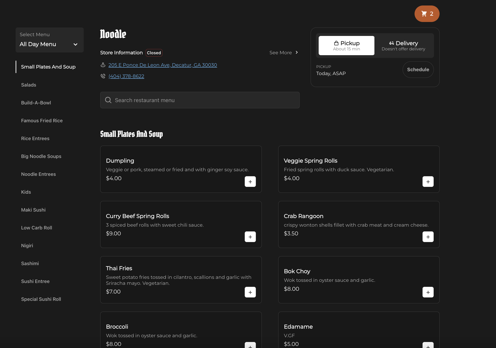
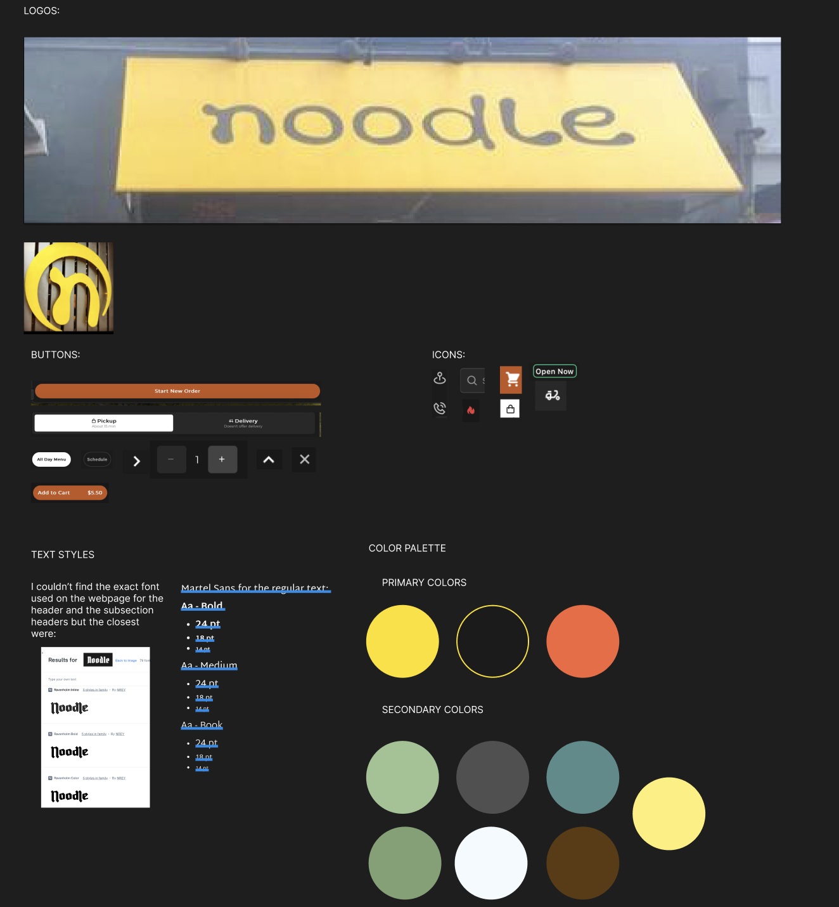
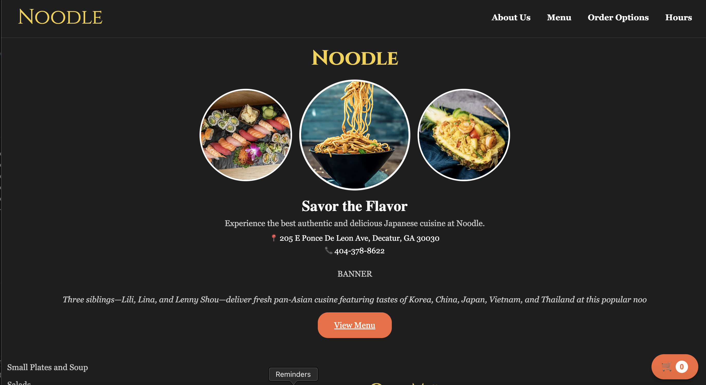

Welcome back! Next on the chopping board... Noodle!
Have you ever been bored at 2am, tired of scrolling through mukbangs, DoorDash, and the same sad fast food sites? All you really want is to browse your favorite local Asian restaurant website, dreaming about your go-to order until they open.
But then...BOOM. The site looks like it was built before computers were even invented.
This redesign project brings modern design to a beloved local restaurant, making it not only beautiful, but functional, responsive, and fun to use for your late night food scrolling.
The Original
I chose only the best restaurant on the planet: Noodle. This is my favorite restaurant at home, but their website is so disappointing.
Just look at it: Noodle Original Site. so much lost potiental This restaurant has done a lot for me so why not help ensure that no one is misguided by the website and mistake Noodle as an outdated restaurant.
Issues
- Visually: There are no photos, no color contrast, no layout. Just an order platform, which isn't really helpful when a user does not know about the place and can not visually see what they are ordering
- Broken Buttons: The All Day Menu button that does not even go anywhere nor is there multiple menus which that would insinuate.
- Accessibility: There is no alternative text, no visual hierarchy, no color contrast.
- Overwhelming: The site has the menu, checkout, and contact info all stacked together with no clear focus.
Analysis
- Learnability: Users might struggle to understand what the restaurant is known for since there is no featured dishes or brand story.
- Memorability: The site is generic and does not leave a strong impression.
- Efficiency: Menu categories are clear and well organized, it is easy to tell what type of item each dish is.!
I wanted to redesign the site to actually reflect how good the restaurant is. Something that is clean, scrollable, and lets the food speak for itself.
Style Guide
I drew inspiration from the original website, physical menu and store design to create the style guide!
Mockup
I created three mockups in figma for desktop, iPad, and iPhone to make sure the redesign worked smoothly at every screen size. I added visual consistency with a color scheme, better displays, and navigation menus. The navigation menus adapt between screens: a full nav bar for desktop and ipads, and a hamburger menu for mobile. I reorganized the site layout to be more intuitive, added scrollable menus, actual food photos, and better sectioning so users always know where they are.
Redesign
Time is up! Please step away from your kitchen stations and take your hands off your dishes. The judges are waiting... THE REDESIGN! Now this is how Noodle deserves to be represented Noodle Redesigned Site!
- Created a fully responsive layout with mobile, tablet, and desktop mockups and implementation
- Added a sticky navbar and section navigation so users always know where they are
- Implemented a collapsible sidebar menu and scrollable category bar for easy food browsing
- Replaced long text lists with dynamic buttons + / - and a responsive cart system
- Added actual food photos for visual engagement
- Added a Start Order button with pickup/delivery toggles
- Designed a real-time Open Now vs Closed Now feature that shows store hours in a popup
Efficiency: Navigating the menu is fast and intuitive, you can jump to categories, add items to your cart, and scroll easily on any screen.
Learnability: Clear section labels, popups, and interactive elements help interact with the site and easily learn how to take advantage of the menus
Memorability: The redesign uses a strong visual brand with warm tones, fonts, and clean layout. I tried to make feels like a place you can replace your late night binge fast food scrolling and instead visit Noodle to pick out your favorite lunch for tomorrow.
Conclusion
Check out Noodle!
This redesign taught me how to turn a boring, outdated page into a responsive, scrollable, and visually pleasing experience. I used consistent design elements, fixed usability problems, and made the website feel as flavorful as the food itself. The final product is easy to use, accessible, and a ready to browse on any device for your next trip to Noodle!